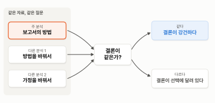
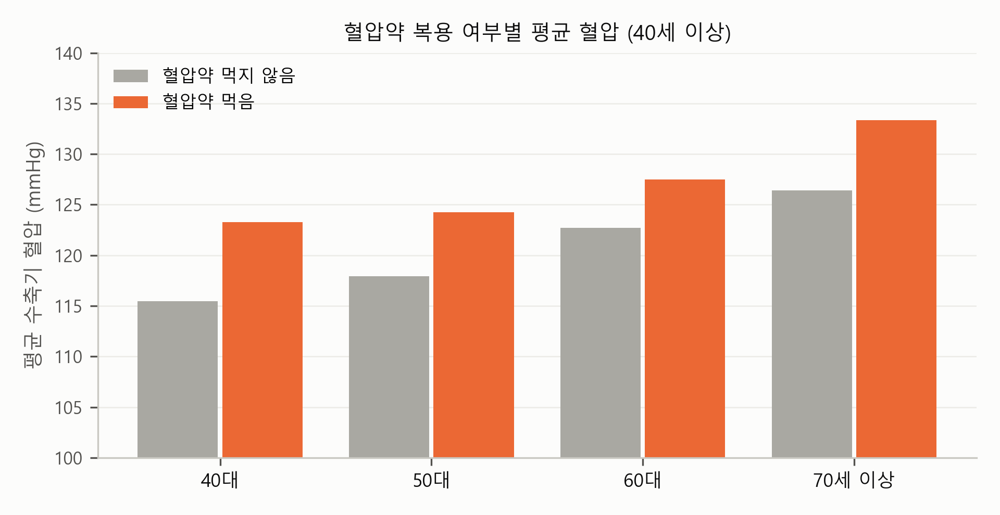
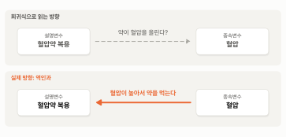

5. 약 먹고 잰 혈압 — 표본을 정하는 판단과 거꾸로 된 순서#
이 장 첫머리의 보고서는 분석 대상과 한계 줄에 이렇게 적었습니다.
분석 대상: 19세 이상 5,731명 (임신부와 학력·혈압 결측 제외, 혈압약 복용자 포함)
혈압약을 먹는 사람(성인의 22%)의 혈압은 약으로 낮춘 값 그대로 넣었다.
이 절과 다음 절은 보고서 밖으로 나갑니다. 이 절의 주인공은 혈압약입니다. 혈압약은 혈압 자료를 분석할 때 두 가지 문제를 일으킵니다. 하나는 약을 먹는 사람을 분석에 넣을지 뺄지를 정하는 판단이고, 다른 하나는 약을 먹는 사람의 혈압이 더 높게 나왔을 때 약과 높은 혈압 가운데 무엇이 먼저인지를 가리는 순서의 문제입니다.
미리 답부터 말하면, 약을 먹는 사람을 어떻게 다루느냐에 따라 대졸 이상의 계수는 −7.2에서 −9.6까지 달라지지만, 학력이 높을수록 혈압이 낮다는 결론은 그대로입니다. 그리고 약을 먹는 사람의 혈압이 높은 것은 약 때문이 아니라 혈압이 높아서 약을 먹기 때문입니다.
김 부장의 혈압 — 약으로 낮춘 숫자#
회사 건강검진으로 돌아가 봅시다. 김 부장은 3년 전에 고혈압 진단을 받고 매일 아침 혈압약을 먹습니다. 올해 검진에서 잰 혈압은 125였습니다. 이 125는 김 부장의 “원래” 혈압일까요? 아닙니다. 약이 없었다면 훨씬 높았을 것입니다. 약으로 낮춘 혈압입니다. 시력검사를 안경을 쓴 채로 하면 교정시력이 나오는 것과 같습니다.
이 자료에서 혈압약을 먹는 사람은 가중치를 적용해 성인의 22.1%입니다. 나이가 들수록 많아져서 50대 23.8%, 60대 41.6%, 70세 이상은 56.3%입니다. 70세 이상의 절반 이상이 약으로 낮춘 혈압을 갖고 있는 것이죠. 보고서는 이 사람들의 혈압을 다른 사람의 혈압과 똑같이 회귀분석에 넣었습니다.
넣을까, 뺄까 — 표본을 정하는 판단#
연구자들이 쓰는 방법은 크게 두 가지입니다(Tobin 외, 2005).[1] 첫째는 혈압약을 먹는 사람을 빼는 것입니다. 둘째는 약을 먹는 사람의 혈압에 일정한 값(흔히 10mmHg나 15mmHg; Levy 외, 2009; Newton-Cheh 외, 2009)[2]을 더해 약을 먹지 않았을 때의 혈압을 어림하는 것입니다. 약이 혈압을 대략 그만큼 낮춘다는 임상 연구에 기댄 방법입니다.
어느 쪽도 완벽하지 않습니다. 빼는 방법은 간단하지만, 그러면 분석의 대상이 바뀝니다. 결과는 “한국 성인”이 아니라 “혈압약을 먹지 않는 한국 성인”에 대한 것이 됩니다. 빠지는 1,547명은 평균 나이가 64.4세로, 남는 사람들(45.5세)보다 스무 살 가까이 많습니다. 남은 사람들은 상대적으로 젊고 건강한 쪽입니다. 이에 반해, 더하는 방법은 약을 먹는 사람까지 모든 사람을 분석에 쓸 수 있습니다. 하지만 약이 혈압을 낮추는 정도가 사람마다 같다고 가정하는 셈인데, 실제로는 그 정도가 사람마다 다를 수 있습니다.
어느 방법을 고르느냐에 따라 결과가 얼마나 달라지는지 비교해 봅시다. 표 5-1은 보고서의 회귀식을, 혈압약을 먹는 사람을 다루는 방법만 바꿔 추정한 것입니다.
표 5-1. 혈압약 복용자를 다루는 방법에 따른 보고서의 회귀식
방법 |
대졸 이상 |
여성 |
\(R^2\) |
관측 수 |
|---|---|---|---|---|
그대로 넣기 (보고서) |
−7.53 (0.90) |
−6.29 (0.40) |
0.212 |
5,731 |
약을 먹는 사람을 분석에서 빼기 |
−7.17 (1.12) |
−7.56 (0.41) |
0.172 |
4,184 |
약을 먹는 사람의 혈압에 10을 더하기 |
−8.89 (0.96) |
−6.77 (0.43) |
0.275 |
5,731 |
약을 먹는 사람의 혈압에 15를 더하기 |
−9.57 (1.02) |
−7.01 (0.46) |
0.296 |
5,731 |
주: 괄호는 표본설계를 반영한 표준오차, 가중치 적용. 중졸, 고졸, 나이, 나이²의 계수와 상수항은 생략.
표를 한 줄씩 읽어 봅시다. 첫째 줄은 보고서의 결과입니다. 혈압약을 먹는 사람의 혈압을 잰 그대로 넣었고, 대졸 이상의 계수는 −7.53입니다.
둘째 줄은 약을 먹는 1,547명을 빼고 남은 4,184명으로 추정한 결과입니다. 대졸 이상과 초졸 이하의 차이는 7.17로, 보고서의 7.53보다 조금 작습니다. 사람이 줄어든 만큼 표준오차는 0.90에서 1.12로 커졌습니다.
셋째 줄과 넷째 줄은 약을 먹는 사람의 혈압에 10과 15를 더한 결과입니다. 대졸 이상과 초졸 이하의 차이는 8.89, 9.57로, 더하는 값이 클수록 벌어집니다. 약을 먹는 사람이 학력이 낮은 쪽에 훨씬 많기 때문입니다. 이 자료에서 초졸 이하는 56%가 혈압약을 먹지만, 대졸 이상은 12%만 먹습니다. 그러니 약의 몫을 더해 주면 학력이 낮은 쪽의 혈압이 더 많이 올라가고, 학력에 따른 차이가 벌어집니다. 거꾸로 말하면, 보고서의 7.53은 학력이 낮은 사람들의 혈압이 약 덕분에 실제보다 낮게 기록된 채로 계산한 차이입니다.
정리하면 대졸 이상의 계수는 방법에 따라 −7.17에서 −9.57까지 달라집니다. 여성의 계수와 \(R^2\)도 조금씩 달라지지만, 결론을 바꿀 만큼은 아닙니다. 어느 숫자가 “정답”이라고 할 수는 없습니다. 각각이 서로 다른 가정 위에 서 있으니까요. 그래서 연구자들은 흔히 한 가지 방법을 주 분석으로 정하고, 다른 방법의 결과를 함께 보여 결론이 크게 바뀌지 않는다는 것을 확인합니다. 이것을 강건성 점검(robustness check)이라고 부릅니다. 그림 5-1이 그 생각을 보여 줍니다.

그림 5-1. 강건성 점검 — 방법이나 가정을 바꿔 분석해도 결론이 같은지 확인한다.
그림에서 보듯이 같은 자료와 같은 질문을 두고, 주 분석 말고도 방법이나 가정을 바꾼 분석을 몇 가지 더 해 봅니다. 결론이 같으면 그 결론은 방법의 선택에 흔들리지 않는다는 뜻에서 강건하다(robust)고 말합니다. 결론이 달라지면, 결론이 어떤 선택에 달려 있는지를 함께 밝혀야 합니다. 이 자료라면 어느 방법이든 학력이 높을수록 혈압이 낮다는 결론은 같고, 대졸 이상의 차이가 7.2에서 9.6 사이에서 달라질 뿐입니다. 결론이 강건한 것이죠. 보고서의 7.5는 그 가운데 작은 쪽에 속합니다.
혈압 숫자 대신 고혈압인지 아닌지를 따지는 분석이라면 이 문제를 비켜 갈 수도 있습니다. 이 장 첫 절의 정의처럼 혈압약을 먹는 사람은 혈압 숫자와 상관없이 고혈압으로 분류하기 때문입니다.
중요한 것은 어느 방법을 골랐는지 보고서에 밝히는 것입니다. 이 장의 보고서도 분석 대상 줄에 “혈압약 복용자 포함”이라고 밝혔습니다. AI에게 혈압 분석을 맡기면, 아무 말이 없는 한 혈압약을 먹는 사람까지 그대로 넣은 결과를 내놓기 쉽습니다. 그 결과가 틀렸다고 할 수는 없지만, 그 사실을 모른 채 읽으면 숫자의 뜻을 오해하게 됩니다. 이런 판단은 통계 기법의 문제가 아니라 그 자료와 분야를 아는 사람의 몫입니다.
💡 팁: 혈압, 혈당, 콜레스테롤처럼 약으로 조절하는 수치를 종속변수로 쓸 때는 AI에게 “해당 약을 복용하는 사람을 어떻게 처리했는지 밝혀 줘. 복용자를 뺀 결과와 넣은 결과를 나란히 보여 줘”라고 요청하세요. 국민건강영양조사라면 혈압약 복용은 DI1_2, 당뇨병약은 DE1_32 같은 변수에 있습니다(이용지침서에서 확인).
혈압약을 먹으면 혈압이 오른다? — 무엇이 먼저인가#
이번에는 혈압약의 다른 얼굴입니다. 회사 건강검진 결과를 정리하던 담당자가 혈압약을 먹는 직원과 먹지 않는 직원의 평균 혈압을 비교해 보았다고 해 봅시다. 그랬더니 혈압약을 먹는 직원의 평균 혈압이 더 높게 나왔습니다. 그렇다면 혈압약이 혈압을 올리는 걸까요?
물론 아닙니다. 혈압이 높아서 약을 먹기 시작한 것이죠. 순서가 거꾸로입니다. 김 부장은 혈압이 높다는 진단을 받은 뒤에 약을 먹기 시작했고, 약 덕분에 혈압이 내려갔지만 원래 높았던 만큼 여전히 다른 직원보다 높습니다. 우리는 혈압약이 혈압을 낮추는 약이라는 것을 알기 때문에 이 비교를 보고도 약이 혈압을 올린다고 생각하지 않습니다. 그런데 평균 혈압을 비교한 숫자 자체에는 무엇이 먼저 일어났는지가 적혀 있지 않습니다.
국민건강영양조사에서도 같은 결과가 나옵니다. 그림 5-2를 봅시다.

그림 5-2. 40세 이상의 연령대별, 혈압약 복용 여부별 평균 수축기 혈압(가중 평균).
그림에서 보듯이 같은 연령대 안에서도 혈압약을 먹는 사람의 혈압이 먹지 않는 사람보다 4.8mmHg에서 7.8mmHg 높습니다. 40대는 123.3 대 115.5, 70세 이상은 133.4 대 126.4입니다. 이 자료로 혈압을 혈압약 복용 더미에 회귀분석하면 양수의 계수가 나올 것이고, \(p\)값도 아주 작을 것입니다. 하지만 그 계수는 “혈압약을 먹으면 혈압이 오른다”는 뜻이 아닙니다.
이런 일이 생기는 이유는 이 자료가 한 사람을 한 번만 본 자료이기 때문입니다. 2024년의 어느 날 그 사람이 약을 먹고 있고 혈압이 높다는 것만 기록돼 있을 뿐, 혈압이 먼저 높았는지 약을 먼저 먹었는지는 기록에 없습니다. 원인과 결과의 방향이 거꾸로일 수 있는 이런 관계를 역인과(reverse causality)라고 부릅니다. 그림 5-3이 이 관계를 보여 줍니다.

그림 5-3. 역인과 — 회귀식으로 읽는 방향과 실제 방향.
그림에서 보듯이 혈압약 복용을 설명변수로, 혈압을 종속변수로 놓고 회귀분석하면, 화살표가 혈압약에서 혈압으로 향하는 것처럼, 곧 약이 혈압을 올리는 것처럼 읽힙니다. 그런데 실제 화살표는 거꾸로입니다. 혈압이 높아서 약을 먹는 것이죠. 같은 두 변수 사이에서 원인과 결과의 화살표가 뒤집혀 있다는 뜻에서 “역”인과라고 부릅니다.
건강 자료에서는 이런 역인과를 자주 만납니다. 사람들은 진단을 받고 나면 약을 먹고, 생활 습관을 바꾸고, 병원에 더 자주 가기 때문입니다. 그러면 자료에서는 약을 먹거나 병원에 자주 가는 사람이 오히려 건강이 나쁜 쪽으로 나오기 쉽습니다. 병을 일으킨 것처럼 보이는 행동이 사실은 병 때문에 생긴 행동인 것이죠. 이 장의 회귀식에 혈압약 복용 여부를 설명변수로 넣지 않은 것도 그래서입니다. 넣으면 “약을 먹는 사람의 혈압이 높다”는 거꾸로 된 관계가 계수로 나와, 마치 약이 혈압을 올리는 것처럼 읽히게 됩니다.
또 하나의 예 — 체중을 줄이려는 사람의 비만도#
같은 일이 체중에서도 일어납니다. 국민건강영양조사의 건강설문은 지난 1년 동안 체중을 조절하려고 노력했는지를 묻습니다. 응답에 따라 사람들을 네 집단으로 나눠 체질량지수를 비교한 것이 표 5-2입니다.
표 5-2. 지난 1년 동안의 체중 조절 노력별 평균 체질량지수와 체질량지수 25 이상인 사람의 비율
체중 조절 노력 |
평균 체질량지수 |
체질량지수 25 이상 (%) |
|---|---|---|
줄이려고 노력했다 |
25.7 |
53.5 |
유지하려고 노력했다 |
23.5 |
25.9 |
노력하지 않았다 |
23.7 |
31.6 |
늘리려고 노력했다 |
20.5 |
5.5 |
주: 가중치 적용. 19세 이상 가운데 체질량지수와 이 문항의 응답이 있는 5,710명.
표에서 보듯이 체중을 줄이려고 노력한 사람의 평균 체질량지수는 25.7로, 노력하지 않은 사람(23.7)보다 2.0 높습니다. 체질량지수 25 이상인 사람의 비율도 53.5%로, 노력하지 않은 사람(31.6%)보다 훨씬 높습니다. 거꾸로 체중을 늘리려고 노력한 사람은 평균 20.5로 가장 낮고, 25 이상인 사람은 5.5%뿐입니다. 표만 보면 체중을 줄이려는 노력이 오히려 살을 찌우는 것처럼 보입니다.
이 숫자로 회귀분석을 하면 “체중을 줄이려고 노력하면 체질량지수가 2만큼 높아진다”는 계수가 나올 것입니다. 물론 순서는 거꾸로입니다. 체질량지수가 높은 사람이 체중을 줄이려고 노력하는 것이죠. 혈압약의 예와 똑같은 모양입니다. 건강 조사에서 “○○하려고 노력한다”, “○○ 치료를 받는다”, “○○을 조심한다” 같은 변수는 대개 그 사람의 건강 상태에 대한 반응이라, 원인으로 회귀식에 넣으면 이런 일이 생깁니다.
💡 팁: AI의 보고서가 건강 조사 자료에서 “○○을 하는 사람이 △△이 높다”는 결과를 내놓으면, 관계의 방향을 물어보세요. “이 관계가 거꾸로일 가능성은 없어? 진단을 받은 뒤에 행동이 바뀌었을 수 있잖아”라고 요청하면 됩니다.
요약 — 이 절의 물음과 답
혈압약을 먹는 사람은 분석에 넣어야 할까, 빼야 할까? 어느 쪽이든 선택한 방법을 밝혀야 한다. 그대로 넣으면 약으로 낮춘 혈압이 들어가고, 빼면 분석의 대상이 약을 먹지 않는 사람으로 바뀐다. 약의 몫을 더해 넣는 방법도 있다.
방법에 따라 결과가 달라지면 어떻게 할까? 방법을 바꿔 가며 결론이 유지되는지 확인한다. 이것을 강건성 점검이라고 한다. 대졸 이상과 초졸 이하의 차이는 7.2에서 9.6 사이로 달라지지만, 학력이 높을수록 혈압이 낮다는 결론은 그대로다.
약을 먹는 사람의 혈압이 더 높다면, 약이 혈압을 올린 걸까? 그렇지 않다. 혈압이 높아서 약을 먹는 것이다. 이렇게 원인과 결과의 방향이 거꾸로인 관계를 역인과라고 한다.